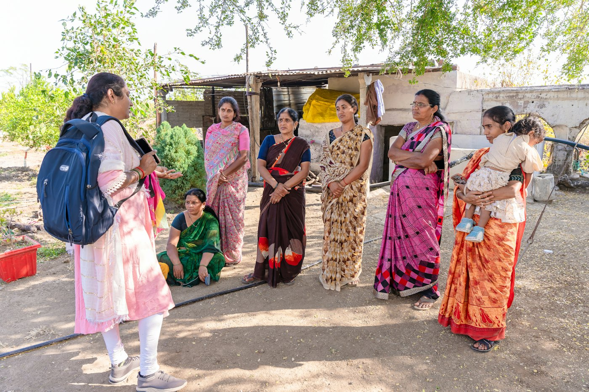

A Multi-Area Social Impact Organisation
Laxmi Surbhi NGO is a registered non-governmental organisation (Registration Number: 690), established in 2007. We are a social development organisation working across multiple areas of community life — serving, empowering and uplifting individuals and communities through compassion, support and opportunity.
Our work is organised into eight areas: Senior Citizen Care, Education, Women Empowerment, Health & Wellness, Skill Development, Youth Development, Environment, and Community Awareness. Senior Citizen Care is one of these areas — an important part of our mission, but not the whole of it.
We operate across Chakradharpur and Jamshedpur, Jharkhand, and we believe that dignity, opportunity and a sense of belonging should never be denied to anyone.

Our Journey & Milestones
Founded to serve, empower and transform lives in Jharkhand.
Working across senior citizen care, education, women empowerment, health, skills, youth, environment and community awareness.
Our Vision
“A just, inclusive and progressive society in which every person — whatever their age or circumstance — lives with dignity, support and opportunity.”
WE ENVISION A FUTURE WHERE:
Our Mission
“To serve, empower and uplift individuals through compassion, support and opportunities for a just, inclusive and progressive society.”
SUPPORT
Provide practical and emotional support according to what each person actually needs.
CONNECT
Reduce isolation by creating genuine human connection across generations.
ASSIST
Help people and families navigate appropriate healthcare and essential services.
PROMOTE WELL-BEING
Encourage healthy, active and socially connected lives at every stage of life.
ENGAGE
Create opportunities for learning, recreation, celebration and community participation.
PROTECT
Promote awareness of safety, dignity, rights and protection within communities.
EMPOWER
Help people remain independent, confident and involved in their communities.
Our Eight Areas of Work
Respect Is Not Optional — It Is Our Promise
Whoever we work with, and whichever area of work we are in, these eight principles apply without exception:
Never humiliate, insult or discriminate.
Do not share personal information or photographs without appropriate permission.
Never place anyone in an unsafe situation.
Never misuse the trust placed in us.
Volunteers must maintain appropriate professional and personal boundaries.
No unauthorised borrowing, lending, solicitation or financial dealings with beneficiaries.
Respect people's choices, privacy and independence.
Report concerns through the proper organisational channel.
“Our commitment to ethics and dignity is the foundation of every relationship we build. Because respect is not optional — it is our promise.”
Our Team Philosophy
“At Laxmi Surbhi, a designation is not a symbol of superiority; it is a commitment to responsibility.”
Every Member is Expected To:
- Respect fellow members and beneficiaries.
- Work collaboratively.
- Take responsibility for assigned duties.
- Maintain transparency and integrity.
- Respect organisational decisions and procedures.
- Contribute ideas and constructive suggestions.
- Put the interests and objectives of the organisation above personal interests.
We Believe
“Leadership is not about having authority over others. It is about taking responsibility for others.”
Beyond Designations
Our strength does not come from titles alone. It comes from the collective contribution of every member, volunteer and supporter who believes that even a small effort can create meaningful change.
Together, we aim to serve, empower and transform communities.